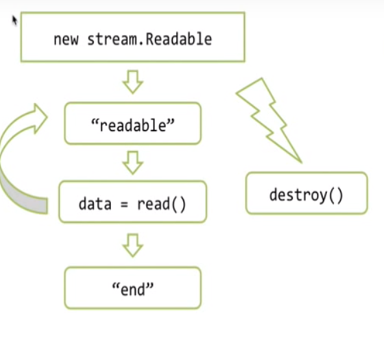
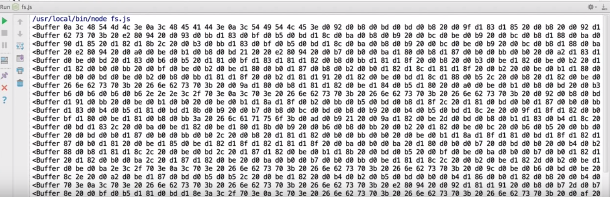
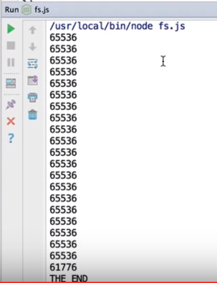
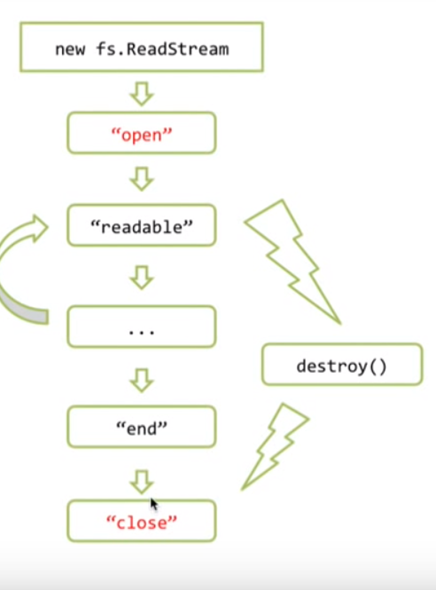
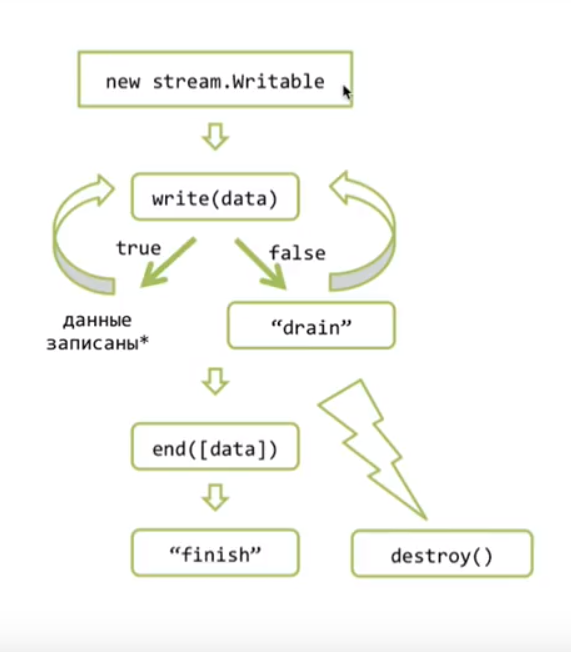

Потоки в NODE JS
Два основных вида потоков
- stream.Readeable-чтение
- из файла: fs.ReadStream
- ...запрос посетителя: server.on('request',...req...)
- stream.Writable-запись
- из файла: fs.Writetream
- ...в ответ посетителю: server.on('request',...res...)
- Есть другие типы потоков
var fs=require('fs');
//fs.ReadStream наследует от stream.Readeable
var stream = new fs.ReadStream(_filename);//вычитать текущий файл
stream.on('readable',function(){
var data=stream.read();
console.log(data);
});
stream.on('end',function(){
console.log('THE END')
});

А теперь вычитаем большой файл:
var fs=require('fs');
//fs.ReadStream наследует от stream.Readeable
var stream = new fs.ReadStream("big.html");//вычитать big.html файл
stream.on('readable',function(){
var data=stream.read();
console.log(data);
});
stream.on('end',function(){
console.log('THE END')
});

Проверим длину частей потоков(она ровна 64kb)
....
stream.on('readable',function(){
var data=stream.read();
console.log(data.length);//длина частей потока
});
....

Специальные события модуля "fs": "open" ---> "close"
Если файл не дочитан, например вызвали метод "destroy()" событие "end" не сработает , но гарантировано сработает событие "close".
Error
Если мы не хотим "положить" сервер при возникноавении ошибки нужно обрабатывать событие 'error'

....
stream.on('error',function(err){
if(err.code=='ENOENT')
console.log('file not found');
}else{
console.error(err)
}
);
Writable-запись
Если посетитель запросит следующий url то отдать ему файл, пример решения этой задачи без потоков будет таким:---> читаем фaйл ---> когда файл прочитается вызываем callback ---> при ошибке сообщаем о ней ---> все хорошо устанавливаем заголовок (mime) и записиваем res.end() отдаем контент
var http=require('http');
var fs=require('fs');
new http.Server(function(req,res){
//res instansceof http.ServerResponse (наследует от)-stream.Writable
if(req.url == '/big.html'){
fs.readFile('big.html', function(err,content){
if(err){
res.statusCode = 500;
res.end('Server error');
}else{
res.setHeader('Content-Type','text/html'; 'charset=utf-8');
res.end(content)
}
});
}
}).listen(3000);
Это решение работает но его проблема пожирание памяти,если файл большой , а "клиент" медленный то весь сонтент зависнет в памяти, а если клиентов много... сервер займет всю доступную память , что не допустимо!
Что бы этого не происходило заменим отдачу ответа(файла) на другой код отдачи файла использующий потоки.
var http=require('http');
var fs=require('fs');
new http.Server(function(req,res){
if(req.url == '/big.html'){
var file=new fs.ReadStream('big.html');//это входной поток данных
}
}).listen(3000)
Алгоритм потоков записи:
- Создаем обьект потока
- (если это http server то это обьект res)
- Дальше нужно отправить что то клиенту,
- это можно сделать с помощю red.write("передаем данные"(данные- это либо буфер, либо строка)
- Если данные не "большие" то они прибавляются к специальному свойству потока bufer и возвращают true ,
- что означае что мы можем писать еще
- Если мы передали очень много данных или если bufer уже был чем то занят то метод write() вернет false
- false означает что буфер сейчас переполнен и запись можно сделать но это нецелесообразно , потому , что в буфере все будет копится,копится....
- (что приведет к обычному вычитываню и записиванию файла)
- ПО етому при получени false запись не продолжают , а ждут специальнго события "drain" которое будет сгенерировано потоком когдаон все отошлет
- тоесть гогда его внутрений bufer опустеет сгенерируется "drain"
- Таким образом мы можем вызыват write(chunk) много - много раз пока все данные не будут записаны после этого нужно вызввать метод "end"
- Самая главная задача "end" закончит запись( закончить внутрение операции)
- Затем генерируется событие "finish"
- Аналогичное событие у Stream.Readable назыается "end"
- Это различее не случайно, так как существуют потоки duplex котоие умеют и читат и писать.
- Соответственно они умеют генерировать как одно событие так и другое.
- Поток в любой момент можно разрушить вызовом метода "destroy()"
- При вызове этого метода работа потока прекращается и все ассоциируемые с ним ресурсы будут освобождены
- при этом событие "finish" никогда не состоится, так как "finish" это успешное завершение потока и отдача всех данных.
- При вызове этого метода работа потока прекращается и все ассоциируемые с ним ресурсы будут освобождены
Реализем правильную отдачу файла:
var http=require('http');
var fs=require('fs');
new http.Server(function(req,res){
if(req.url == '/big.html'){
var file=new fs.ReadStream('big.html');//это входной поток данных
sendFile(file,res);
}
}).listen(3000)
function sendFile(file,res){
file.on('readable',write);
function write(){
var fileContent=file.read();//считать
if(fileContent && !res.write(fileContent)){//отправить
file.removeListener('readable',write);
res.once('drain',function(){//подождать
file.on('readable',write);
write();
});
}
}
}
file.on('end',function(){
res.end();
})
Получившийся код достаточно универсальный он реализует алгоритм отправки данных из одного потока в другой(sendFile(file,res)), используя стандартние методы Readable & Writable.
Такой метод передачи данных существует в библиотеке и называется file.pipe(res)
var http=require('http');
var fs=require('fs');
new http.Server(function(req,res){
if(req.url == '/big.html'){
var file=new fs.ReadStream('big.html');//это входной поток данных
sendFile(file,res);
}
}).listen(3000);
function sendFile(file,res){
file.pipe(res)// "Readable".pipe("Writable")
//при помощи метода pipe() можно писать один входной поток в несколько выходных
file.pipe(process.stdout)// кроме ответа клиенту вывод производим в стандартый вывод процеса
}
В даном коде нет обработчика ошибок и если произойдет ошиба упадет весь сервер!!
var http=require('http');
var fs=require('fs');
new http.Server(function(req,res){
if(req.url == '/big.html'){
var file=new fs.ReadStream('big.html');//это входной поток данных
sendFile(file,res);
}
}).listen(3000);
function sendFile(file,res){
file.pipe(res);
file.on('error',function(){
res.statusCode=500;
res.end('Server Errror');
console.log(err)
});
}
В ряде руководств такой код является окончательным но ставиь его на реальный сервер ни в коем случае нельзя.
Если клиент открыл соединение но закрыл его до того как закончилась запись (загрузка файла била завершена), топ получается, что файл останется подвисшим и все ассоциируемые с ним структуры останутся в памяти, также у операционных систем существует лимит на количество открытых файлов, а в третих вместе с файлом навечно зависает в памяти исоответствующий обьект потока и все замыкание в котором он находится.
Что бы это исправить нам нужно отслеживать событие "res.on('close')"
var http=require('http');
var fs=require('fs');
new http.Server(function(req,res){
if(req.url == '/big.html'){
var file=new fs.ReadStream('big.html');//это входной поток данных
sendFile(file,res);
}
}).listen(3000);
function sendFile(file,res){
file.pipe(res);
file.on('error',function(){
res.statusCode=500;
res.end('Server Errror');
console.log(err)
});
/*
file.on('open',function(){
console.log('open');
}).on('close',function(){
console.log('close');
});
*/
res.on('close',function(){// сигнал что соединение было оборвано
file.destroy();// вызываем метод, соответсвенно файл будет закрыт
});
}
Теперь наш код можно пускать на жывой сервер!!!